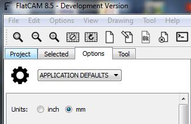

Double-sided PCB milling
Contents
Export Gerber files from Eagle
From your pcb eagle's project, open your board. Then export Gerber files following these 4 steps. Make sure you are working on Metric unit. We need to unselect cutouts as they are included in Excellon file already. Unzip your output file. That's it we are done with Eagle.

Eagle export Gerber.
CAM process with Flatcam
Previous post Flatcam installing . Today, I'll show you the process of making 2-layer PCB.
Configuring the project
- Trailing Zeros
-
Eagle uses Trailing Zeros in its Excellon number format but does not properly report this format in the Excellon file. To tell FlatCAM to use this format by default set this system option excellon_zeros to T by using the set_sys command in the Shell Command Line Interface as shown below:
set_sys excellon_zero T
Note
2018-05-18 : Current Flatcam source is having problem with this command. If need this functionality, use stable version.
- System unit
-
From options tab, select Units as mm.
Units: mm
Create mirror axis and alignment pins
Tip
Each object can be moved to arbitrary location. Select object and go to selected tab then find offset tool.
Load Gerber files:
copper_top.gbr copper_bottom.gbr soldermask_top.gbr soldermask_bottom.gbr profile.gbr
Load Excellon file:
drills.xln
Mirror axis for bottom layer stuff, from menu bar, Tool -> Double-sided PCB Tool. Create mirror axis around Y axis at location x = 50 mm:
Mirror Axis: Y Axis Location: Point Point/Box: (50,0)
Mirror bottom layer objects one by one from the drop-down menu and click "Mirror Object":
copper_bottom.gbr soldermask_bottom.gbr profile.gbr drills.xln
Alignment Holes help align the pcb when we flip it over. Create holes with 6 mm in diameter at desired locations. Then click "Create Alignment Drill":
Alignment Holes: (110, -5),(110, 60) Drill diam: 6
You can generate gcode to cut Alignment Holes following similar process of the next section below. You can skip this for now and do it later.

Double-sided PCB Tool
Top-side non-copper area
Hide all other layer except copper_top.gbr. Select this object then navigate to "Non-copper regions" section and generate geometry:
Boundary Margin: 0.1
New geometry "copper_top.gbr_noncopper" is created. Navigate to "Paint Area" and generate paint area:
Tool dia: 0.1 Overlap: 0.05 Margin: 0.1 Method: standard Connect: yes Contour: yes Selection: All
New geometry "copper_top.gbr_noncopper_paint" is created. Navigate to "Create CNC Job" and generate toolpath:
Cut Z: -0.05 Travel Z: 1.0 Feed Rate: 250.0 Tool dia: 0.1 Spindle speed: 24,000 Multi-Depth: No
New geometry "copper_top.gbr_noncopper_paint_cnc" is created. Navigate to "Export G-Code" and export gcode.
Top-side isolation
Select "copper_top.gbr" and navigate to "Isolation Routing". Then generate geometry:
Tool dia: 0.145 Width(#passes): 1 Pass overlap: 0.0 Combine Passes: No
New geometry "copper_top.gbr_iso" is created. Navigate to "Create CNC Job" and generate toolpath:
Cut Z: -0.05 Travel Z: 1.0 Feed Rate: 250.0 Tool dia: 0.145 Spindle speed: 24,000 Multi-Depth: No
New geometry "copper_top.gbr_iso_cnc" is created. Navigate to "Export G-Code" and export gcode.
Top-side solder mask
Select "soldermask_top.gbr" and navigate to "Isolation Routing". Then generate geometry:
Tool dia: 0.0 Width(#passes): 1 Pass overlap: 0.0 Combine Passes: No
New geometry "soldermask_top.gbr_iso" is created. Navigate to "Paint Area" and generate paint area:
Tool dia: 0.1 Overlap: 0.05 Margin: 0.1 Method: standard Connect: yes Contour: yes Selection: All
New geometry "soldermask_top.gbr_iso_paint" is created. Navigate to "Create CNC Job" and generate toolpath:
Cut Z: -0.05 Travel Z: 1.0 Feed Rate: 400.0 Tool dia: 0.1 Spindle speed: 24,000 Multi-Depth: No
New geometry "soldermask_top.gbr_iso_paint_cnc" is created. Navigate to "Export G-Code" and export gcode. That's it for the top layer. Now flip over the PCB. The alignment holes helps keep PCB in correct position. The bottom-side non-copper area, isolation, soldermask are identical to the top layer.
Drilling
In drills.xln's Tools selection, choose hole sizes needed for drilling, excluding those large holes which need milling. Holes larger than 1 mm in diameter, I will use milling process instead. So select:
0.406 0.61 0.95 1.016
In Create CNC Job section:
Cut Z: -1.95 Travel Z: 1.0 Feed Rate: 150.0 Tool change: yes Tool change Z: 50 Spindle speed: 24,000
New geometry "drills.xln_cnc" is created. Navigate to "Export G-Code" and export gcode. Next, select drills.xln again and choose hole sizes for milling:
2.2 3.2 3.302
At Mill Holes section, generate geometry:
Tool dia: 1.5
New geometry "soldermask_top.gbr_iso_paint" is created. Navigate to "Create CNC Job" and generate toolpath:
Cut Z: -1.95 Travel Z: 1.0 Feed Rate: 150.0 Tool dia: 1.5 Spindle speed: 24,000 Multi-Depth: yes Depth/pass: 1
New geometry "drills.xln_mill_cnc" is created. Navigate to "Export G-Code" and export gcode.
Cutouts
This is a bit tricky. We need the cut edges pass right through the middle of profile lines. The measurement tool indicates 0.254 mm line thickness. For 1.5 mm tool dia, we set Tool dia = 1.5 - 0.254 mm. In Isolation Routinf, generate geometry with the calculated Tool dia:
Tool dia: 1.246 Width(passes): 1 Pass overlap: 0.0 Combine Passes: No
New geometry "profile.gbr_iso" is created. Delete the interior part by Edit Geometry > Add Rectangle on inner line > With Select tool, press CTRL and select Geometry and box respectively > Cut Path > Delete Shape both box and inner line > Update Geometry.

Add Rectangle > Cut Path > Delete Shape

Only outter profile left.
For small size PCB, you might need tabs to hold PCB in place while cutting. To do so, edit geometry > draw boxes on where you want tabs> cut path > delete boxes. This PCB is big enough so I will move on to Create CNC Job. Note that Tool dia is 1.5 mm this time:
Cut Z: -1.95 Travel Z: 1.0 Feed Rate: 150.0 Tool dia: 1.5 Spindle speed: 24,000 Multi-Depth: yes Depth/pass: 1

A closer look.
Cutting edges are on the middle of the profile.gbr's lines now.
New geometry "profile.gbr_iso_cnc" is created. Export G-Code. Now we are done with Flatcam.
Machine specific G-code
Now we combine exported Gcode into a single file if they share the same cutting tool. A 0.1mm engrave bit is used for noncopper paint and isolation. A 0.6 and 0.9 mm drill bits are used for drilling. A 1.5 mm endmill is used for large holes and profile milling. This is example of my Gcode header:
G17 G54 G21 G90 $H G00 X7.999700Y75.7321 M03 S24000 G4 P1 G00 Z1.0000 G01 Z-0.0500 F200.00 G01 X8.045600Y75.7418 .....
My CNC has Surface grid-probing feature which helps compensate uneven surface automatically. Simply specify area you wanna probe with G32. M374 save probe results for next time usage.:
G32 X-143.790000 Y-77.1287 A105. B55. M374 G4 P1 G17 G54 G21 G90 $H G00 X7.999700Y75.7321 M03 S24000 G4 P1 G00 Z1.0000 G01 Z-0.0500 F200.00 G01 X8.045600Y75.7418 ...
Also Tool length probe with G38.2 and G10 for work coordinate. M500 save the settings for next time usage.:
G32 X-143.790000 Y-77.1287 A105. B55. M374 G4 P1 G17 G54 G21 G90 G00 X4.000000Y74.000F2000. G4 P1 G38.2 Z-20. G4 P2 G10 L20 P1 Z0. M500 G4 P1 $H G00 X7.999700Y75.7321 M03 S24000 G4 P1 G00 Z1.0000 G01 Z-0.0500 F200.00 G01 X8.045600Y75.7418
Important
G32 utilize Machine coordinate system (G53 values)
Gcode visualization of top layer isolation.
Gcode visualization of top layer soldermask.

Gcode visualization of bottom layer isolation.
Gcode visualization of bottom layer soldermask.

Gcode visualization of holes and profile milling.
Milling the PCB
Milling top layer.
Milling top layer soldermask.

Milling bottom layer.
Finshed PCB top side.
Finshed PCB bottom side.
Comments
Comments powered by Disqus